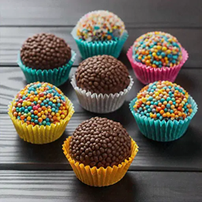

Relatório da Missão: Intredientes Cósmicos 📜
- 1 lata de Leite Condensado de Andrômeda
- 1 colher (sopa) de Manteiga de Asteroide (sem sal)
- 2
colheres (sopa)3colheres (sopa) de Pó de Buraco Negro (Chocolocale em Pó) Poeira de Estrela Cadente (Chocolate Granulado) para a cobertura final
Procedimento de Lançamento: Modo de Preparo 🚀
Passo 1: A Ignição da Nebulosa
Em uma panela (sua nave espacial), misture o leite condensado, a manteiga e o chocolate em pó. É crucial mexer bem antes de ligar o motor (o fogo).
Passo 2: Navegar pelo Calor
Cozinhe em fogo baixo, mexendo constantemente. O ponto ideal é quando a mistura começa a desgrudar do fundo da nave, evitando a reentrada na atmosfera (queimar). A temperatura ideal é 100°C.
Passo 3: Pouso e Modelagem
Despeje a massa em um prato untado e espere esfriar. Após o pouso seguro, unte as mãos e modele pequenos planetas. Role-os na poeira de estrela cadente. Cuidado com a presença de H2O (água) nas mãos, pode dificultar a modelagem.
Diário de Bordo do Comandante 📚
Um antigo chef estelar, após provar a iguaria, declarou: Este não é apenas um doce, é uma viagem pelas estrelas em cada mordida
.
Registro da última transmissão da cozinha:
STATUS_MISSÃO: CONCLUÍDA
DOCE_ESTELAR: PRONTO
COMBUSTIVEL_NAVE: 99% ALERTA: Possível anomalia detectada. Sabor <delicioso> acima do esperado.